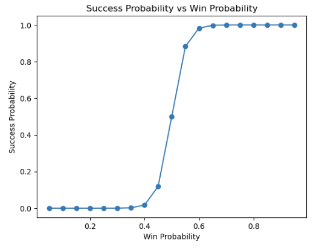
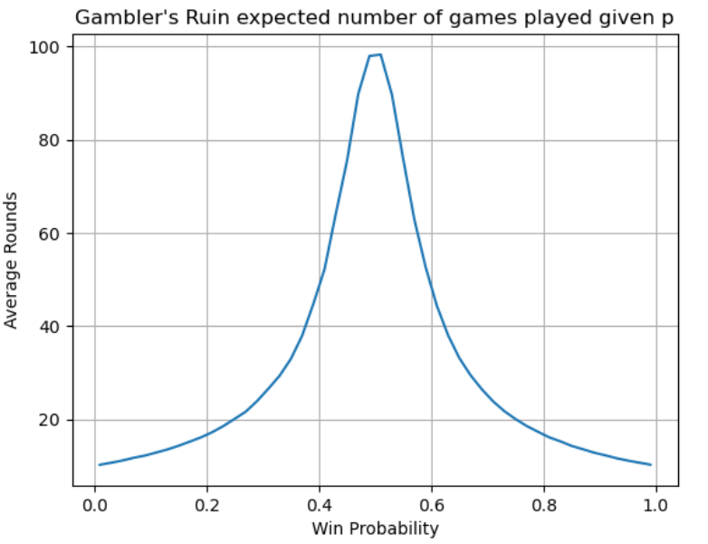

A gambler begins with an initial amount of \(i\) dollars. In each round, the gambler either wins $1 with a probability of \(p\) or loses $1 with a probability of \(q = 1 - p\), where \(0 \leq p \leq 1\). The gambler continues playing until they either reach \(N\) dollars or lose all their money. The key question is: what is the probability that the gambler will eventually reach \(N\) dollars?
If we define \(X(t)\) to be the random variable of the amount of dollars the gambler possesses after \(t\) rounds of games, assuming the gambling is ongoing. And T is the number of times that the gambler stops. Then \(X(t)\) is a martingale because by conditional probability. Then we can derive 4 equations here.
\[E[X(t+1)] = \frac{1}{2}(E[X(t)] - 1) + \frac{1}{2}(E[X(t)] + 1). \label{eq:expected_value}\] Note: intuitively
\[E[X(T)] = X(0) = i. \label{eq:martingale_property}\] Note: Martingale property.
\[E[X(T)] = i = P(N) \times N + P(0) \times 0. \label{eq:probability}\] Note: \(P(N)\) is the probability that the gambler ends up with \(N\) dollars.
\[P(N) = \frac{i}{N}.
\label{eq:solve}\] Note: Solve from (3)
The equations are pretty intuitive: in a fair game, the probability of
doubling your money is 0.5, just as the chance of going bankrupt.
Nothing surprising here.
If you start with $10 and play a fair game where you either lose $1 or win $1 with a probability of 0.5, the chances of doubling your money to $20 or going bankrupt are equal at 0.5. But what if the probability of winning is 0.6? Intuitively, you might think the probability of doubling your money is 0.6. However, the actual probability is much higher. I’ll run the Python code below to demonstrate this using Monte Carlo simulation.
import random
def simulate_game(start_amount, target_amount, win_prob, num_simulations):
success_count = 0
for _ in range(num_simulations):
current_amount = start_amount
while current_amount > 0 and current_amount < target_amount:
if random.random() < win_prob:
current_amount += 1
else:
current_amount -= 1
if current_amount >= target_amount:
success_count += 1
return success_count / num_simulations
# Parameters
start_amount = 10
target_amount = 20
num_simulations = 100000
# Simulate for game with win probability of 0.6
win_prob_higher = 0.6
probability_higher = simulate_game(start_amount, target_amount, win_prob_higher, num_simulations)It turns out that the probability of doubling your money is actually 0.98.
I created a graph that shows the relationship between the probability of winning and the probability of success. The graph illustrates that when your winning probability increases to 0.55, the probability of successfully doubling your money increases significantly. In fact, even a slight increase in the winning probability to 0.51 raises the chance of success to 0.6.

Next, I generated a graph depicting the expected number of games a gambler needs to play to either double their money or go broke. I found that if the probability \(p\) is 0.5, the expected number of games played is 100. However, if \(p\) increases to 0.6, this number drops to 48. The takeaway is that even a slight increase in the winning probability above 0.5 can significantly reduce the expected number of games needed.

Jim Simons, famously known as “The Man Who Solved the Market,” managed to achieve an impressive average annual return of 66%. Surprisingly, his win rate on trades is said to be just 51%, which many find hard to believe. But, as shown earlier, with a 51% win rate in a gambling scenario, there’s a 60% chance of doubling an initial $10 million to $20 million within 100 trades.
Sadly, the exact secrets behind Simons’ success remain unknown due to 1) his secretive nature and 2) He died RIP. However, considering some Twitter claims that the Medallion Fund makes over 150,000 trades per day (though this number is a bit hard to swallow), it starts to make sense. The guy just revolutionized the industry of discretion and due diligence into the industry of gambling operations.
By knowing that just having a 1% better chance of winning than losing can make a big difference. This isn’t just about trading or gambling—it’s about life. The idea of the Gambler’s Ruin problem gets me motivated to get up, create, trade, and take risks. If we make sure we have a tiny edge and keep trying, we can end up in a much better place. After 100 tries, we might be twice as well off as when we started and it’s mathematically proven.